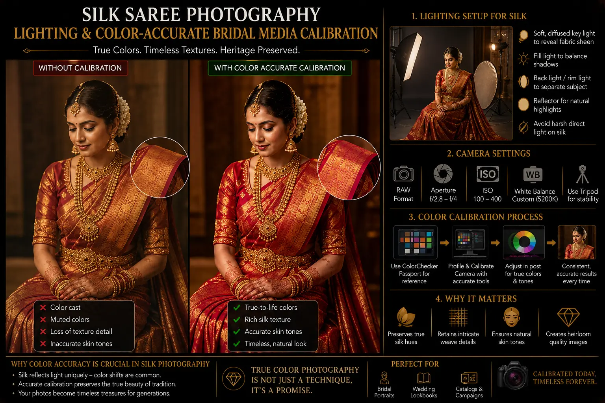
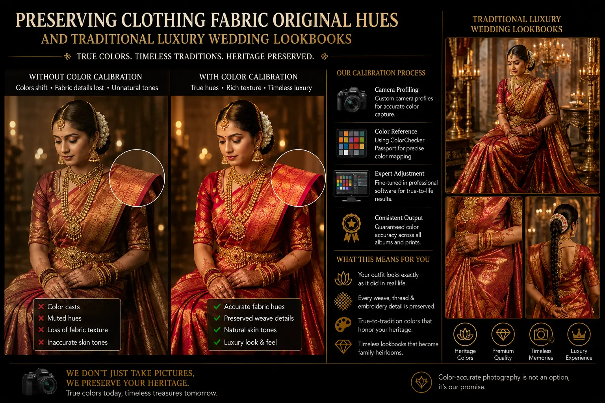

How True-Color Camera Calibrations Protect Bridal Kanjeevaram Silk Textures
The Challenge of Rendering Handwoven Heritage Textiles
In high-end Marriage photography, the bridal Kanjeevaram silk saree is much more than a garment. It represents a family's heirloom heritage, a masterpiece of handloom weaving, and a repository of deep cultural traditions. Yet, capturing the true majesty of a Kanjeevaram saree on digital camera sensors is one of the most complex tasks in fashion and wedding media. The unique structure of handspun silk fibers combined with real gold and silver metallic threads (zari) creates a surface that refracts, shifts, and reflects light in constantly changing ways.
Without a mathematically calibrated color workflow, digital camera sensors inevitably misinterpret these rich colors. Deep vermillion can drift toward orange, peacock blue shifts to teal, and the brilliant luster of real gold zari appears flat, dull, or even greenish. To solve this, a South Indian wedding photo studio must move beyond standard camera presets and implement a scientific color calibration pipeline. This process ensures that the camera's raw data translates into an exact representation of the physical saree, preserving the designer's original intent.
Maintaining absolute color integrity is not just an aesthetic goal; it is a technical necessity when producing traditional luxury wedding lookbooks. By utilizing physical color targets and building custom camera profiles, creative teams can achieve true color fidelity, ensuring the wedding imagery retains its stunning realism.
The Science of Color-Accurate Calibration
Achieving perfect color rendering in wedding photography requires a rigorous calibration pipeline. Color-Accurate Bridal Media Calibration ensures that the colors captured by the camera sensor match the physical garment:
- Physical color profiling. The shoot begins by capturing a standardized color reference target (such as the X-Rite ColorChecker Passport) under the exact production lighting. This physical reference provides known color values that allow post-production software to generate a custom ICC profile, correcting any sensor-specific color deviations.
- High-CRI light sources. Using high-CRI (Color Rendering Index) strobes and LEDs is essential. Low-quality lights miss critical chunks of the color spectrum, making it impossible to capture certain rich hues. Professional Silk Saree Photography Lighting relies on light sources with a CRI of 95 or higher to illuminate the full spectrum of the dyed silk threads.
- Custom white balance calibration. Rather than relying on the camera's automatic white balance, the team sets a manual white balance using a neutral gray card under the active lighting setup. This prevents color temperature drifting as the camera angle changes.
- Color-managed editing workspaces. All editing is performed on hardware-calibrated monitors configured to display the sRGB or Adobe RGB color space accurately, ensuring that adjustments made during editing reflect the true colors of the saree.
Fabric Integrity
Preserving clothing fabric original hues is the core goal of color calibration, preventing digital shifts that alter the appearance of traditional textiles.
Dynamic Range Control
High-dynamic range camera bodies capture both the bright reflections of gold zari and the deep textures of the silk without losing detail in highlights or shadows.
Lookbook Excellence
Creating traditional luxury wedding lookbooks demands consistent color matching, ensuring the saree's texture stands out in high-resolution print and digital catalogs.
Transparent Valuation
Understanding the overall elite wedding photography cost helps clients see the value in custom color profiles, calibrated lights, and advanced camera gear.

Lighting Textures: Controlling Reflective Gold Zari
Photographing Kanjeevaram sarees requires balancing soft diffusion to reveal fabric texture with specular highlights to bring out the gold zari. The lighting setup must be designed specifically for the properties of handwoven silk:
- Key light diffusion. A large softbox or diffusion scrim is placed overhead to establish a soft, uniform exposure. This soft light fills the folds of the saree, revealing the weave texture without creating harsh highlights that blow out detail.
- Side-angled kicker light. A gridded kicker light is positioned at a steep side angle to skim the surface of the fabric. This accentuates the three-dimensional texture of the silk threads and makes the gold embroidery stand out from the background fabric.
- Reflector fill. Silver or gold reflectors are used to bounce fill light back into the shadows, maintaining a natural balance of light across the entire garment.
- Lens choices. High-resolution prime lenses with specialized coatings prevent contrast loss and chromatic aberrations, keeping the edges of the gold embroidery sharp and clean.
Studio Equipment
- High-resolution camera bodies with 15+ stops of dynamic range.
- ColorChecker targets for building custom camera profiles.
- Studio strobes with high-CRI flash tubes.
- Color-calibrated editing monitors.
Lighting Modifiers
- Octaboxes for soft, wrap-around light.
- Strip boxes with grids for directional side lighting.
- White/silver reflectors to manage shadow transitions.
- Polarizing filters to control specular reflection on silk fibers.
Post-Production Workflow
- Generate custom camera profiles using ColorChecker raw files.
- Verify color values of key fabric tones against physical swatches.
- Adjust luminance values to preserve the metallic quality of gold zari.
- Export files with embedded color profiles (sRGB or Adobe RGB).

Conclusion
For high-end bridal media, color accuracy is a science. Implementing **Color-Accurate Bridal Media Calibration** using physical color charts and custom sensor profiles is the only way of **preserving clothing fabric original hues** in digital files. When paired with professional **Silk Saree Photography Lighting** and **high-dynamic range camera bodies**, this calibrated pipeline captures the rich textures and gold zari sheen of Kanjeevaram sarees in all their original beauty.
At **The PhD Ads**, we maintain a dedicated **South Indian wedding photo studio** workflow focused on color-accurate heritage photography. From catalog production to styled bridal lookbooks, our color-managed process ensures your heirloom wedding garments are documented with absolute accuracy. Check our **candid marriage frames pricing** options and see how we can bring elite quality to your wedding lookbook.
Key Topics
Calibrate Your Heritage Visuals
At The PhD Ads, we use custom camera color calibration, high-CRI lighting, and dynamic range preservation to capture the true color and rich texture of your bridal silk sarees.
Email: team@e2o.in